Originally titled “The Frightening Possibility of a Global Genetically-Tailored Caste System”.
In today’s polarized American society, it is very easy to get lost and forget who we are. In today’s mass media it is easy to forget our role and our life when we are confronted with people with one million followers on twitter, and who have Facebook pages with thousands of followers. It is very difficult to judge ourselves when the mainstream media, the television, the Hollywood movies, and even our educational system tries to define who we are. I know this.
This is my push back.
This is my push back on the onslaught of nonsense that floods our airwaves, and seeps through the cracks of our being. This is my push back on who I am personally, and who many Americans are. This is my push back on what a man is. This is my push back as to what defines us. It is not what some rich oligarch thinks we are. We are something else entirely.
For the last sixty years, the American media, and their owners have created narratives that served to box us into divisive subcultures. They have tried to split us apart, tear us up, and force us to live in fear. This is not going to happen. Not on my watch.
Because you are a hero, even if you do not realize it yet.
Introduction
Growing up, I was fed a steady diet of adventure magazines and pulp stories that described how heroes behave and what they encounter. Yes, I knew that they were stories, but deep down inside I did believe that I too would someday experience the same kind of highs and lows that my heroes endured.
Well that was true.
However, little did I know that the highs and lows occurred on American soil, and the monsters that I fought were nebulous, invisible and powerful. Far more powerful than I was ever aware possible. I was tasked to fight the worst kind of monster; the invisible kind.
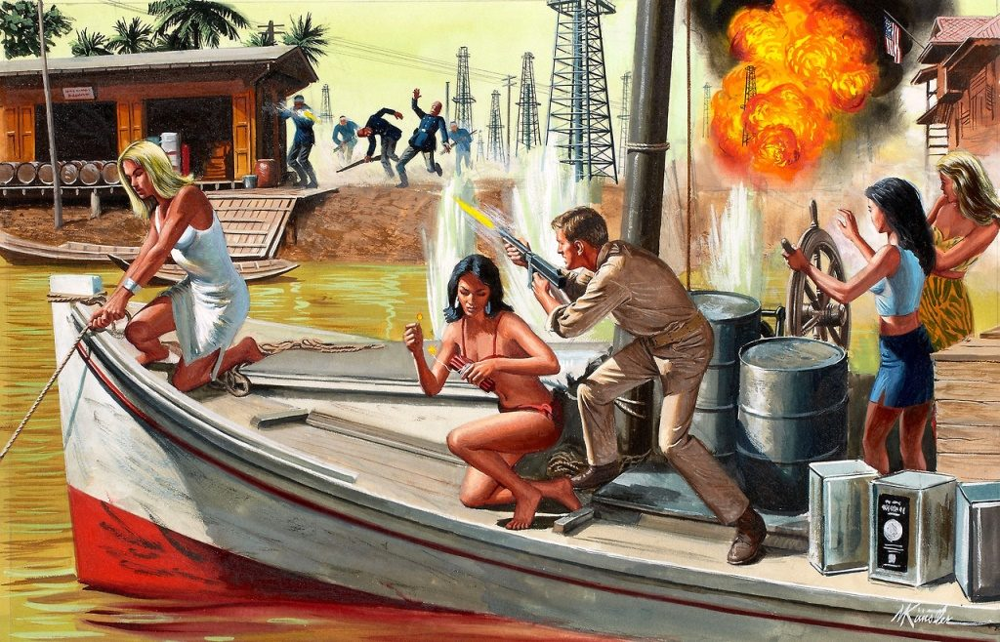
With this in mind, let’s take a look at what my expectations were. I, as part of a different generation than many of my readers had different views about life, and roles. These different views were generational, and were formed in my youth.
My reality then, was quite different from the reality we experience today.
What I expected
When I was young, I was sheltered from the realities of today’s world. Bad guys wore masks to keep their identities hidden. Good guys wore white, and helped children, old ladies, puppies and kittens.
- Bad guys dressed in black. They wore masks to hide their identities. They were militant. The moved in groups, or mobs.
- Good guys showed their faces. They wore white or nice hats. They never said anything bad about another person. They helped others. They protected others. They only fought when absolutely necessary.
At that time, I didn’t know what a gay person was, let alone a trans-gender person. I hadn’t a clue as to why the sadistic communist monster Che Guevara had such a large following. While Charles Manson was busy murdering people in California, and college campuses were protesting the Vietnam war, I was busy studying to go to college, and working part time to afford it.
When I wasn’t working or studying, I was reading. Perhaps my number one past-time was science fiction and men’s adventure stories. Of which, I can now clearly point out, shaped my personality and my character.
Men's adventure is a genre of magazine that was published in the United States from the 1940s until the early 1970s. Catering to a male audience, these magazines featured pin-up girls and lurid tales of adventure that typically featured wartime feats of daring, exotic travel or conflict with wild animals.
Though that window of the world, I learned about the importance of being a man, and how it benefited society. However, being a man (a “real” man) was not without it’s danger and perils. For the men that I studied were the men of the pulp magazines common at that time.
Men, all men, but especially the GREAT men, needed to have a purpose and a code of behavior.
There used to be magazines, scores of them, that described a “man’s” idea of adventure. These were stories that described a person, just like you and me, fighting against evil doers, powerful and nefarious men, and nature’s power.
Indeed, even facing off against a pack of ferocious rabid otters… yikes!
These stories would write about the thrill of battle with an unnaturally bellicose lobster. Indeed, now that would be troublesome. You do know that they do resent being eaten. Or, consider the trials of being “shot down” and floating in a life-raft under a hot relentless sun. Meanwhile hungry sharks circled your life-raft as the air slowly seeped out.
These stories might be about great prison escapes, or carefully planned, but poorly executed, night time raids against monocle wearing uniformed Nazi “super race” black clad storm trooper warriors…
These were “men’s stories” that held common themes designed for men, and their interests. They would satiate the dreams and desires of men who would need to “escape” from their mundane realities.
In the hidden depths of our imaginations, we could dream about rescuing somebody, say a beautiful woman in a low-cut dress who’s being attacked by a big-tusked boar. Or, working with exotic Oriental women with long fingernails, and deep mesmerizing eyes, while conspiring to blow up a concentration camp. Or, maybe being whisked away by a stunning French red-head and hidden inside her boudoir, while the Gestapo trundles through the wreckage downstairs.
Ah, these are things that really appealed to me. To be a hero. To rescue others who were unable (or unwilling) to fight for their life…
Adventure magazines
These were the magazines that described people like me, on adventures, to achieve their dreams. And, you know, by reading these stories, I too felt that I was destined to participate in similar adventures. Oh, I had no doubt that I might NOT end up fighting a crocodile with a knife bare-handed, though I did consider the perils of quick-sand a distinct possibility…
Adventure pulps filled just one niche in a rich print world. This world, a man’s world, celebrated soldiering & seduction, as well as courage & cleavage. It did so in many formats for many different sorts of readers.
The adventure pulps — Man’s Adventure, Men Today, Men in Conflict, Rugged Men, Man’s True Action, Real Adventure, Man’s Conquest, Man’s Epic, New Man, Man’s Life, Man’s Best, and maybe another 125 titles like these — addressed themselves to a certain kind of readership that seems to have become as extinct as the magazines. That niche is now empty and forgotten. Terribly, and horribly forgotten.
Yeah. It's forgotten. Except for a few collectors, it's as if the magazines and their readers never existed. Unlike numerous other pulp genres, many of which are still celebrated nostalgically and even anthologized for new readers, the adventure pulps, their stories, and their art have disappeared. They are today as culturally invisible as the sobbing women's fiction periodicals of the 19th century. The only way you can find these magazines is in the moldy stacks of old, disused bookstores located in off-the-main-road small towns. And then, under piles of other books and magazines usually lining the bottom of forgotten cardboard boxes.
To many the one single aspect of these once-common magazines that modern critics (non-readers all) are likely to recall is their penchant for transforming war and political conflict into a “cheap sadism”. Yes, there are those who feel this way. They look at the covers and proclaim in their most vociferous SJW voice how sadistic it all is.
Well… maybe, to a point.
Many of their covers, year after year, were devoted to grinning Nazis, bespectacled Japanese officers, and cold North Koreans torturing, whipping, and dismembering chesty and chained American nurses. It’s sadism the fat obese woman SWJ’s proclaim.
But, come on now, it wasn’t only about war. What about the articles devoted to vicious attack trout?
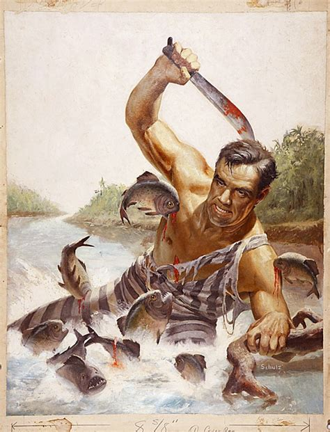
These magazines were special and they helped shaped who I am today. (Though, I am sure some social justice warrior might have a major fainting spell over that acknowledgement.) Anything that kept Nazi cruelty current, such as the arrest and trial of Adolf Eichmann, was a boon to these magazines.
There we would hear stories of Schmeisser machine guns, Lugar pistols, and swastika emblazoned red armbands. We would be reminded of the acres of barb-wired fences and watchtowers with huge search lights that scanned the foggy darkness. We would be exposed to the horrible tortures and abuses of the innocent behind those walls, where only fierce German Shepard’s prowled.
Once in a while they’d borrow an image from the news, such as cigar-wielding Cuban Communists, and apply it to the genre. They’d stamp it in place in the stories like a jack-booted thug smashing and trampling on broken glass in the mud. Mostly, though, it was 20 years of the same theme repeated over and over.
The theme was usually pain; pain is where the pincers of angry lobsters meet the hot, flesh-searing ends of a burning communist cigars.
Pain. Where the red-hot pliers sitting in the hot ember coals meet the soft and subtle young flesh of the terrified Army nurse.
Pain. Where the tangled sinews of sweaty muscled young warriors tear into bloody tatters as they pass through glass-edged barbwire boundaries. Even the adventures in these “adventure” pulps are really about suffering. The villains never stand for ideas; they’re means of inflicting hurt.
For a break from all the fighting and pain, there were advertisements. Indeed, who can forget the advertisements for pills purported to stop bed wetting, acne cures, glasses that hypnotize women, scrotal hernia trusses, and mounted girls’ head trophies at only $2.98. There were advertisements on how to be a “He Man”, and a coupon on taking a test to determine whether or not you can draw.
These were the magazines that my generation read.
Other Magazines and Other Places
Sure there were those who would plunk down a buck and a quarter for a magazine on deer hunting (the local barbershop was filled with these magazines), or “Sports Illustrated” (I think it is still being published, no?), or maybe “Home Handyman”, “Mechanics Illustrated”, or a J.C.Whitney catalog chock full of car parts for us to customize our GTO, or Camaro.
Barber shops were great, and still are.
We would go sit in the chairs and let the old barber (typically a white haired old gent) give us a hair cut while we sat down, smoked a cigarette (or chewed a wad of skoal chewing tobacco) and discussed the last Friday night football (or basketball game). It was our little break from work, studies, or hassles with our wives or girlfriends.
It was a place for men. It was our place of refuge.
Men and Women
For the record, men are not women. Women are not men. Either you have an “X” chromosome or you have a “Y” chromosome. There aren’t any shades of grey in this matter. It’s not a social, political or intellectual issue. It is a genetic issue.
No matter how much you might want to believe otherwise, or how much the attractive television celebratory repeats the illusion. (let’s not get caught up in this side issue. If you are disturbed by my opinions, you can leave or read why I feel that way.) Follow these links if you are confused at why I have opinions on this matter…
- Why Man and Woman are not Equal
- Why Men Aren’t Really Men Anymore
- Men and Women Are Not Equal
- Stop Living for the Approval of Women
- 12 Things that Men can do that Women can’t
Guys are not women. Males are boys first, then they “grow up” and become men. We have a generally well understood list of behaviors, and needs, though many progressives and women would like to dispute that. Turning us into “perfect” men for them… I man on the outside but with a woman’s mind and heart.
Well, life is not like that fantasy, and I grew up normally like the rest of the men of my generation. We aspired to be men, and we all expected to become the head of a household with a wife and a family of children to support. That was our destiny and our future. In the meantime, and “along the way”, we could live our dreams as chance and providence permitted.
Whether that meant that we would drag race cars, go out hunting on the weekends, sail boats in the harbors, go out drinking with “the boys”, or just work and tinker on that “old clunker” in the garage, we aspired for a life that most men of my generation longed for. We looked forward to becoming men. We looked forward to fulfilling that role in society.
Expectations of a Man
For me, I too expected to someday raise a family, but not until after I completed my education, and obtained meaningful employment. This, for me included my post-college education, my role in the United State’s Navy, and my purpose in life.
I was fully and wholly devoted to that goal. I had opportunities for girlfriends leading to pregnancy and marriage when I was in High School. I didn’t take them. I was not ready to get married. I was not ready for the kinds of things that my friends were. I had to put everything off.
In those days, if you got a girl pregnant, you married her. That was the way it was done. Abortions on demand was not publicly disclosed. A pregnancy of a girlfriend was a future-limiting event. That would have been a termination of my dream. I would be stuck working in the steel mills or back to the coal mines.
I could not afford that.
So I hung back. I put off all the fun and sexual escapades that my friends were engaged in. Oh sure, I drank and partied like the rest of my generation. But, I was very guarded about my dreams. I was single-mindedly focused on my dreams and goals.
In fact, in looking back, I really turned down some pretty amazing opportunities when I was younger. Today, I slap my forehead and yell “What the fuck was I thinking?”. You know, really, I could have bought condoms. (Though in those days they weren’t displayed in the open. You needed to ask the girl at the register for them. Living in a small town, might be a little problematic. It just goes to show you that I truly missed some worth while adventures in my youth.)
Anyways…
I guess, compared to many of my classmates, I “took the long way home”.
(A famous, in the United States, song “Take the long way home”, by the group “Supertramp”. Bing search in China as of 2017 could not find the reference. Sigh.) It's a new reality.
Ah. I suppose it all sounds so silly to the “modern and urban” youth of today (in the Post-Obama reality.).
For today, we have new role models like Justin Berber, and transgender sports figures. Oh there are others, like octo-mom, and Hillary Clinton, why even I hear she is working on yet another book…
Yeah. You just go about acting rude and like a thug. Pay a bunch of people to follow you and praise you, and BOOM! You are the hottest thing to the father-less youth of today.
Significance and Importance
It wasn’t always that way.
Importance was never measured by popularity. It was measured by deeds and achievements. The idea that you need to be famous and popular to be a success is a recent development. It is a social narrative contrived by powerful people to manipulate huge groups of people.
As a young man, I did not desire fame or popularity. I wanted to accomplish significant deeds. I wanted to better the world. i wanted to help others and make the world a better place to live in. Even if all I did was make my immediate town a little cleaner.
I read about adventure. I read about heroes, and I wanted to be one. Even if it meant pulling myself out of quicksand by using a hanging vine. I wanted to be one, even if it meant that I might be in a fiery plane crash, and have to paddle up-river through dangerous piranha filled swamp. I wanted to be one, even if it meant that I would have to tunnel under barbed wire in the pouring rain to get there.
Oh, you can sure bet that I liked the idea of being surrounded by scantily clad beautiful women. Especially hot busty vixens sporting a Tommy-gun, and wearing a pith helmet. Ah, you can certainly picture the image; brown booted leggy chick wearing khaki riding britches, and poplin blouse with an open collar (displaying some nice cleavage) and rolled up sleeves. She’s tough, and beautiful, and knows it. Yeah.
However, at that time, in my youth I did not fully appreciate the beauty of the female form to the same degree that I do today. My point of view about the world, women, war, conflict and nature were all very simplistic and rather “black and white”. Think Raquel Welch and Shirley Eaton.
Yet, the stories that I read fueled my interest in faraway places, and in doing great deeds for just purposes. Which, was key; the achievement of great deeds. Men should accomplish GREAT DEEDS. That’s what they are for.
Actually, men who perform great deeds is considered very “hot” by the majority of “real” women that we men encounter in daily life.
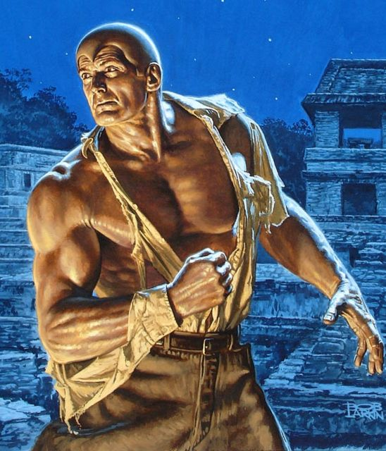
Whether it was Doc Savage and his small band of above-average achievers, or a science fiction hero on a task of adventure and discovery, my vision of what a man should be was set in a fictional reality. I placed high standards, and even higher expectations on how my life would play out.
I really did.
In My Case…
Knowing the little that I knew, and understanding the limitations that were placed on me by where I lived (Coal and steel country in Western Pennsylvania.) I had very few options and fewer opportunities. My father tried to enlist some distant second or third cousins and great cousins to “knock down some doors” for me. I had one who was an Air Force General, but he didn’t give my dad the light of day. I wrote to all my Senators and Congressmen, and took all the tests to join the Air Force Academy.
That actually did work. One thing though. I tied for first place with another classmate. Only one of us could get selected. It wasn’t me. It was my (now new friend) Brian.
I was crushed, but not defeated. I knew that heroes always had setbacks. They had to persevere and come up with alternative plans to achieve their dreams and their goals. So, I redoubled my efforts. I switched to plan “B”.
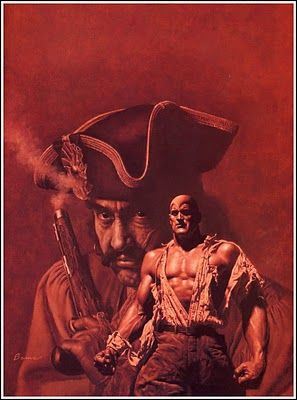
I figured, and expected that by the study of Aerospace Engineering would open up doors for me. I figured that if I coupled it with studies in Mechanical Engineering with an emphasis on the thermodynamics of rocket engines would make me unique. I figured that these studies would “open up” doors (for me) in things related to space travel (and in my mind, adventure). Well, they did, didn’t they?
Yes they did.
I obtained a Naval Aviator role. Not an easy thing to come by.
With this career path, and with these experience, I was comfortably on my way to adventure. I was on the way to performing great deeds. I figured that I would make a significant mark on my life and the lives of others. I was on the way, and nothing was going to stop me. Nothing.
That is until one day, the Base Commander wanted to talk to me.

The End Goal Line Changed
So I entered MAJestic. So I had some experiences and some things about me were changed. I exited the United States Navy. I left the exciting world of Naval Aviation for a new reality; one where I would be an “average Joe” while part of MAJestic.
What a disappointment!
I was to be average, and if I over-performed, my reality would be reset so that I was typical. If I under performed, my life would be reset so that I would be typical. I was to experience typical life in the 1980’s through the 2000 so that “others” could observe and adjust the reality accordingly.
It was nothing heroic. It was a role of constantly having Lucy steal the football away. It was a world were you were forever running on the the treadmill of life. No matter what opportunities would be presented to me, I would forevermore be denied them as I would no longer become typical. The movie “Office Space” became my perpetual reality.
In a society that values fame and popularity, those of us who perform great deeds are ridiculed. We are minimized. We are forgotten, and tossed aside. Like many homeless vets, and unemployed scientists, it seems that only the very wealthy, and politically connected are successful and rewarded.
The rest of us, no matter what we do, are treated as unimportant.
I faced the harsh slap of reality, as all men do.
I expected that being a Naval Aviator, flying the top most advanced aircraft available under the most dangerous conditions possible would give me the kinds of experiences that I would need to actually participate in the adventures that I read about.
I was doing everything that I could think of to get where my dreams lay. I was not a “wanna-be” dreamer, but I was a doer. I spent the money, did the work, worked the study, and pushed and pushed in every way that I knew how, to meet and achieve my dreams.
I was a man.
As are YOU the person who is reading this.
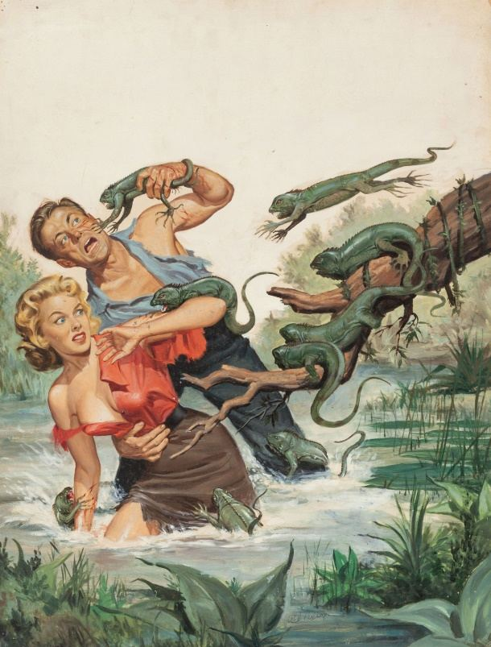
In my mind, the path to be an astronaut hero was very straightforward.
Study hard, and battle to be the top in your class. Apply to one of the government military academies or organizations, and learn to fly. Then, be the best pilot ever, and apply to fly in one of the new (or secretive… I had assumed) space organizations. In so doing, I would excel, find a place and a role in life, and would be rewarded for all my years of hard work and study.
When I was offered the role in MAJestic, it was (I believed) one of these most important steps that I had believed, read, and dreamed about.
I was there. I accepted the role. I was altered and entered and performed my tasks.
Ugh. But what I saw on television, what I saw out of Hollywood, and what I read about was not reality. It was a fiction. It did not exist. It was a narrative that I bought, lock stock and barrel. The truth and the reality was something all together different.
At that time, we were all rather simplistic. We were idealistic, and we actually believed the news. We believed that those we elected would represent us. We believed that our taxes would go towards fixing the roads, and that only the lowest of the low would dare accept a “handout” from the government in terms of welfare…
Boy oh boy, has times changed.
Hopes and Dreams
Today, well the reader knows what the world is today. I ask the reader this; what are your hopes and dreams? Have you ever wished (in your deepest dreams) to be like one of your movie heroes, or sports heroes?
What are your hidden desires? You cannot tell me that you do not have them. Are you so “politically correct” that you are afraid to admit your dreams and desires because someone might be offended? We all have dreams, for they are the inspiration that helps us to set and achieve our goals.
For me, I wanted to fly.
I wanted to strap myself to one of those huge monster of tubes, mechanical contrivances, and pure liquid ZOOM! And, just like that, go forth and explore the heavens. That is what I wanted, and that is what I expected after getting my university degrees, and being accepted into a very rare and coveted “pilot slot” in the United States Navy.
I wanted adventure. I wanted to be the man who did great deeds.
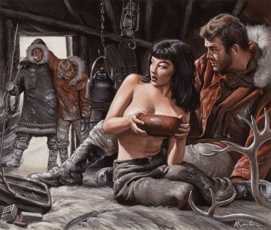
Well, that’s all well and good, but how exactly does that have anything to do with being a hero? (For that is what all the Men’s Literature was all about…being a hero.)
The answer is simple. It doesn’t.
It was, rather, what I thought a hero was. A hero, in my mind, was someone who took chances and risks to make the world a better place. He did it for others.
It’s true. Others do agree with me about this point. People who become heroes tend to be concerned with the well-being of others. They do so, and most importantly do so, at a risk or ignorance of the dangers to themselves.
According to researchers, empathy and compassion for others are key variables that contribute to heroic behavior. People who rush in to help others in the face of danger and adversity do so because they genuinely care about the safety and well-being of other people. A 2009 study found that people who have heroic tendencies also have a much higher degree of empathy. People who engage in acts of heroism feel concern and care for the people around them and they are able to feel what those in need of help are feeling. Obviously "service for self" sentience's can never become heroes.
So what? What does it matter?
It’s all about perceptions. When you are raised in a way that places emphasis on being a man, and doing great deeds, it becomes something that is expected of you. We, not just myself but everyone who was part of MAJestic, took our role seriously. No we did not end up fighting savages with bones in their noses, or being chased by rabid tusked elephants charging through the jungles, but we did have our little adventures.
It’s just that our adventures weren’t something that we expected.
There just wasn’t a set “bad guy”, or “evil empire” to fight. There just wasn’t any kind of uniforms that we could identify, or specific weapons that we could use to battle them. There wasn’t any goals or plans or targets for us to track our progress with.
We were in a compartmentalized secret program. For us, we were only told the bare minimum of what we needed to know so that we could accomplish our mission parameters, and those whom we would work with were treated the same as we were. We never knew the full extent of anything, and those whom “supervised” our program knew very little about what we did, and how we did it. They too, only knew the bare minimum of information so that they themselves could accomplish their own tasks.
How can I say this? Is is almost like our bodies were given to others to use for their purposes. They controlled the realities that we experienced. They defined them, and watched our reactions to them. They learned while we experienced. It was almost as bad as this…
It was as if we were just small fleas on the back of a rampaging elephant, located on a boat floating down stream through rapids, heading straight toward a huge waterfall. We only knew what we needed to know and no more. Otherwise, I dare say, that us fleas would have tried to jump off that pesky elephant the first chance we got.
We were tasked with something that involved our thoughts, and control of them. As such, how we reacted to events were constantly monitored and our environment was constantly adjusted. Our reality was constantly adjusted to fit a plan that was supported by our personality.
I do realize that this is a difficult concept to understand. That is because most people do not recognize that thoughts have substance and the ability to alter and bend reality. So, here I am. Describing a complex organization that is built around a concept that most humans can't even accept as truth. Let alone to accept that other species have built technologies around this sort of thing. Let alone accepting that they have built up a civilization around these advanced concepts that has lasted and persisted for millions of years.
Yet, the invisible evil that we fought against had a structure.
The Invisible Evil
Yes, there was an enemy involved in all of this. It was us, or better yet, certain powerful individuals who longed for power and control and believed that they possessed the ability to obtain it. It’s just like the old James Bond movies with trans-national super-villains. It is exactly like that.
No, they didn’t go by the terms SPECTRE or THRUSH. Though, they did actually have their own names and their own objectives.
The true enemy, we fought daily. However, we never confronted this enemy. They always remained hidden and elusive. They were like a hydra. They operated in the open, and manipulated humans through complex techniques of overt manipulation and subterfuge.
They argue that this is normal and nothing was wrong. Even though several very severe and serious laws were violated.
When I joined the organization, I felt that I would have a role. I believed that the role was special and would involve my “special” skills and ability. I also believed that it would be heroic (in some way) in nature. I believed that I would be doing great things for the good of all (after all, is that not what was promised to me?).
While I did not know what it involved, I did EXPECT that it would involve space (outer space, beyond the earths atmosphere), risk, science (technologies of great advancement), secrets and an enemy that could be easily identified.
What happened was something else entirely. No, the reader should not get confused. What I expected did occur, it just did not occur like I expected it to.
What I expected did occur, it just did not occur like I expected it to.
Indeed, let’s go through the list;
- Involve space (outer space, beyond the earths atmosphere). CHECK.
- Involve aliens. (Well, yes, but not like I expected.) CHECK.
- Science. Oh yes. CHECK. CHECK.
- Top Secrets. CHECK.
- Being surrounded by beautiful women. CHECK.
- An enemy that could be easily identified. NOPE!
I have described my reality and my operations. For what ever it is worth. However, it was like nothing I expected, and for that reason, it is difficult for me to explain out to the reader. Yet, I must explain it to the reader for ultimate understanding.
It was nothing like I expected.
To this end, let’s take a guess at what the reader’s expectation of MAJestic operations might be… and, as an extension, what you might think being a hero is all about.
Reader Expectations
Here, let’s discuss what you (the reader) might expect a MAJestic agent to be involved in.
What do you think? Maybe something like this…
Do you believe that there is a group of managers sitting in Washington, D.C. that views and oversees all of the MAJestic operations? Do you think that some powerful United States Senators know and participate in MAJestic related activity? Perhaps you think that Barrack Obama presides over secret meetings in the basement of the White House surrounded by his generals…
If you hold any of these beliefs, then you are wrong.
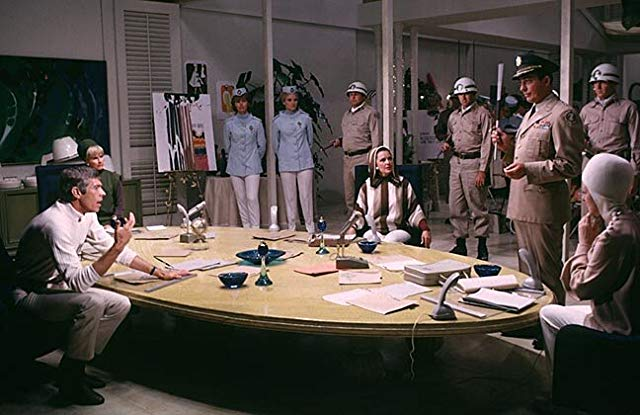
You are very, very, VERY wrong.
There simply isn’t any headquarters located in Washington, D.C. or on any military base on this world-line that controls the organization. There isn’t any kind of military style pay-grades, or chain of command outside of our individual cells. There are no uniforms, insignia, or flags that we all can unite to and bound us together in a form of mutual understanding.
There are no Earth bound huge complexes that MAJestic operates from. This is true for form, and for function. Anything large and stationary is off-world, and off world-line.
Sure there were other shows, such as shows about World War II, like “The Rat Patrol”, and “McHale’s Navy”, but these were the shows that I grew up with. They reflected my belief in what was possible given a science-backed government.
As a young boy, I would play with my chemistry set (now pretty much banned from sale, thanks Bill Clinton (D)). I would build electronics with my electronic kits (Also mostly banned or severely limited in scope –thank you Bill Clinton). I would also dream of one day being a Spaceman, or at least a Scientist wearing the white lab coat and the large Identification badge on my lapel.(All which actually occurred, but not at all like I envisioned it to be.)
Aside from the cryptic nomenclature that festooned various military documentation (all of which signified carved out W(U)-SAP activity), there simply wasn’t any United States government organized structure.
No one could point to an organizational chart, and say, “Here is where the MAJestic organization resides within the United States government.”. The entire organization is secret as no other government program could ever be.
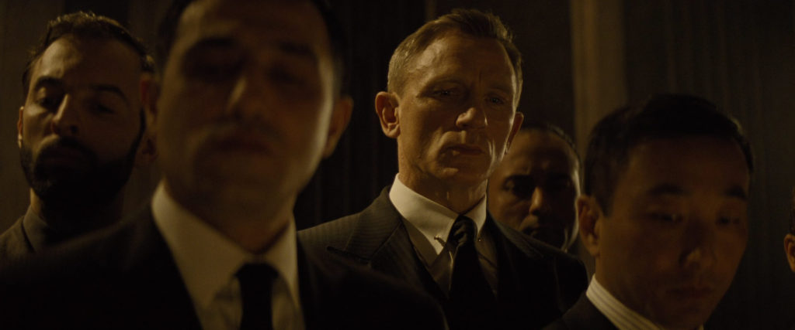
Maybe the reader thinks that MAJestic is a policy arm of one of the branches of government. Impossible, for numerous reasons. Maybe you think that it is run by the CIA, or the NSA, or the DHS. If you do, then you are wrong. None of those agencies are truly secret.
Real secrecy is treated very seriously.
It is treated very, very secret. There won’t be any political hack (Susan Rice) appointed to the organization, or very capable (political) individuals such as Hillary Clinton selling all the MAJestic secrets for a pittance.
We, every single one of us, are purposely vetted by inter-dimensional extraterrestrials and chosen for the roles by a criterion that is beyond the understanding of the vast bulk of humanity. And, yes, I am writing my memoirs that discloses, but does not define, a mere handful of the secrets that I have been exposed to, this is all part of a much larger plan, and is already approved for our extraterrestrial friends, if not the MAJestic organization itself.
But, hey! You don’t have to believe me. It really doesn’t matter if I participated in MAJestic, wore a Santa Claus costume on Christmas, or hunted squirrels with a 22-250. It really doesn’t matter. Does it?
It does not.
This isn’t all about me. This is about YOU, the reader and an understanding that YOU are a hero and you don’t even realize it. I want to spend the time to give you the understanding on how being a hero works, and why YOU are a hero.
A Military Organization?
So, let’s jump back to my narrative, and talk a little about MAJestic. You know the super top secret United States carve-out that all the fact checkers, and authorities on the Internet says does not exist. Let’s talk about it here.
Do you, the reader, think that it is a military organization?
Maybe [1], you the reader thinks that the MAJestic organization is setup like a military organization in so far as there are military spacecraft, with advanced weapons, and advanced propulsive technologies. This would include such things as particle-beam cannons, infra-ray blasters, and advanced laser technologies. Maybe you would believe that they would all be organized like a kind of “space marines”, or “space-based patrol service”.
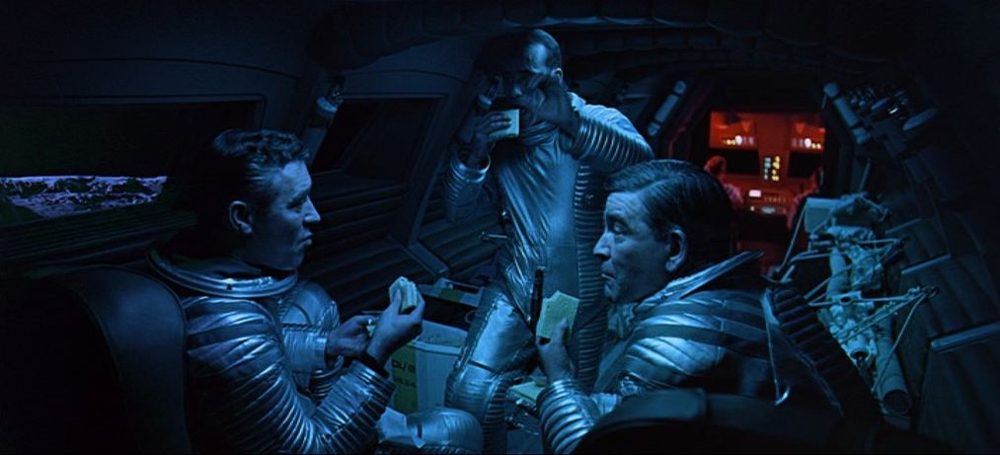
Nope. MAJestic is not organized like that at all. There are technologies that are quite advanced, the participants all have prior military backgrounds, and motivations, but the reality is nothing like this kind of imagery.
An Organization of Scientists?
Maybe [2] the reader might think that MAJestic is run by scientists. In this idea, the scientists would sit within their offices on college campuses, surrounded by books and piles of papers. Maybe they would have a backboard with all kinds of intense mathematical formulas scribbled on it. Here, the most brilliant men (and women) in the world would be the guardians of the mysteries of our extraterrestrial friends.
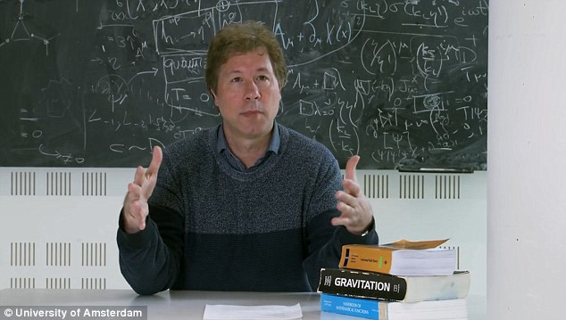
Seriously?
Have you been on college campuses lately? Look at the student population. We call them “snowflakes” because they are [1] emotionally immature, [2] education-deficient, and [3] totally lacking in reason. These pupils are what they are simply because of whom and what taught them.
The so called “brilliant geniuses” that occupy American universities are simply political hacks in possession of pieces of paper that awards them status without effort. No, I am afraid that the geniuses in our education system have NOTHING to do with MAJestic.
That is not to say that they are ALL bad. However, evil people have polluted the educational and research environment in favor of a statist narrative. This is terribly restrictive for scientific advancement.
An Organization of Spiritual Beings?
Maybe [3] the reader is under the impression that MAJestic is populated with individuals who have “pure” understandings. This is so that they could communicate with the “enlighten ones” and assist in bringing about a great spiritual awakening for the benefit of all humankind. Like for instance, oh dare I say it, those “new age” types (typically living in California) who channel the “knowledge of the star people” for the overall benefit of human-kind (person-kind)?
Oh, that’s a good one! Yuck! Why I am almost on the floor rolling about and laughing!
Well, again, it’s off the mark. Nope that is not what we did and the impressions are quite simplistic. However, of all the possible scenarios that the reader might presuppose, this concept comes closest to the true reality. Yes, it does. As much as I hate to admit it.
So… hey!
There are creatures far older than the human race. They have established technology and inherent capabilities far in advance than what us mere mortals possess. To us, they appear magical or even God-like. What’s more, they work with us humans, hand in hand with selected individuals within a set and defined structure. That is MAJestic.
That is MAJestic.
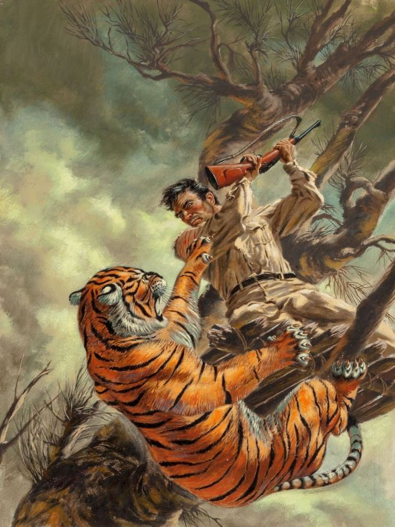
The one thing that I can say is that the general population is just as clueless as I was when I first joined the organization. MAJestic is unlike anything that anyone can dare presuppose.
It is SEVERELY different.
MAJestic
While it was initially setup by humans to resolve special issues and perceived threats to the United States, it has since evolved into a very secretive organization that assists the management of this evolutionary nursery. MAJestic members exist for one purpose.
We assist, in a supportive role, the education of the human species and evolutionary sentience determination.
We do this though the MWI. We do this through dimensional slides. We do this through world-line manipulation.
There are many facets of MAJestic. Some are involved in pure reverse engineering. Some are involved in other aspects. The part that I was involved in had to do with THOUGHTS and how they affected our REALITY template.
Rather than “thought police”, we were more like “canaries in a coal mine” that were monitored by “others” for thought influences.
Whenever the influences became too discordant, we were pulled out of the world-line and entered a “readjusted” world-line.
Which pretty much sucked.
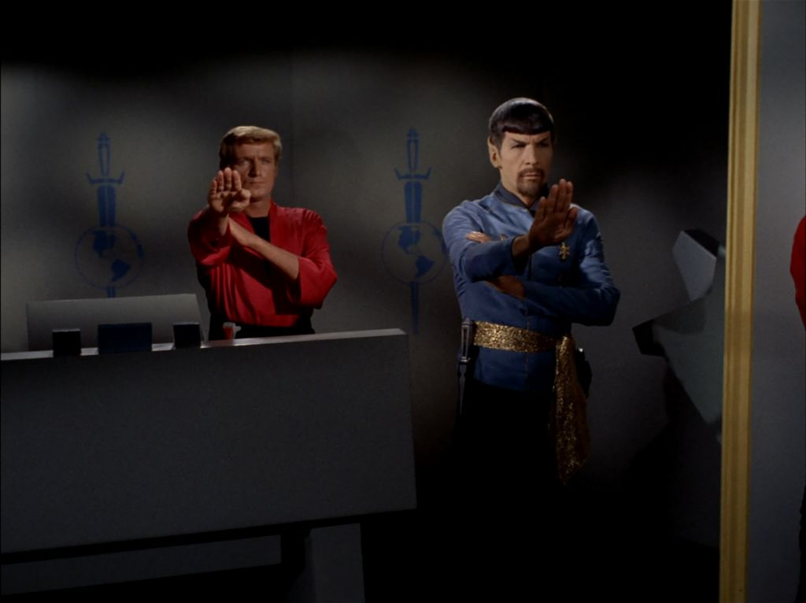
I suppose that that is too boring for the reader to accept. I would imagine that the reader was expecting stories relating to top-secret spacecraft, stories of firefights against strange extraterrestrials, and stories of adventure on strange planets located in faraway places.
Nope. Sorry.
One world-line has chunky peanut-butter, and another never heard of the stuff. One world-line has BLT’s made out of bacon, lettuce and tomato, and another has BLT made out of baked spam, lettuce and tomato. One has girls that don’t wear pantyhose and another has pantyhose that comes in big plastic eggs. Hardly the stuff of excitement.
The world around you is just a stage from which your soul obtains experiences. This stage is a shared template. While we occupy our own reality within it, we share in the manifested thoughts of others. So…
Surprise!
Yet, if the reader spends some time to really think about it, the truth is far more interesting than any fictional narrative regarding exotic weapon technology and planetary adventures.
It really is.
The truth is that we live in a universe where we inhabit individual “realities”. We do not share one unified reality. As such, we as an individual, have ultimate control of our reality. With the right technology, and the proper training, we can alter this reality.
Call it what you might, I prefer to refer to it as dimensional transport or world-line switching.
Humans can change and alter their reality.
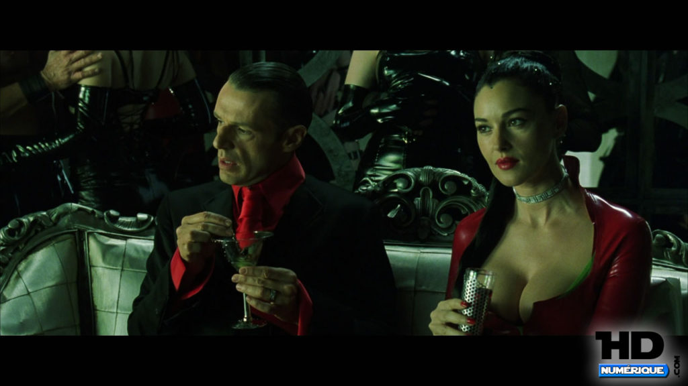
Operations Overview
Way back in the first few posts of this series, within the text, I described what my mission parameters and objectives were. I will repeat them here.
The reader should well understand that I was tasked, along with a handful of other individuals, to conduct “dimensional anchoring” activities. Yada Yada Yada.
To accomplish this, we all were implanted with specialized probes, and then we were trained to use the probes to conduct our operations. We performed the operations independently.
It sounds crazy, eh?
Maybe we’re more like this guy from the movie “Happy Feet”, where he used his “attachment” to alien artifacts as an excuse to become a prophet. That’s me, eh? Some kind of prophet.
Is that me?
Maybe all that what I am writing about is all nonsense. Right? These other extraterrestrials are hanging around the earth out of idle curiosity, or maybe they want to take over the world “War of the Worlds” style.
Right?
The idea that they could be here, monitoring and altering the direction and evolutionary growth of mankind is crazy. Right?
The idea that thoughts can control and alter our reality is silly right?
That we live in a constantly moving reality and that both the past and the future can change relative to the immediate. Crazy!
It sounds so CRAZY! It's nothing like any "normal" person would think up. It's like something that was dreamed up by a crazy person, or an extraterrestrial. Yes, doesn't it, now?
Well that’s the way it is. Like it or not.
In other words, we lived “normal” lives while the probes ran 24-7. All of the agents assigned in this role had technical backgrounds, similar sentience’s, and passed extraterrestrial vetting processes.
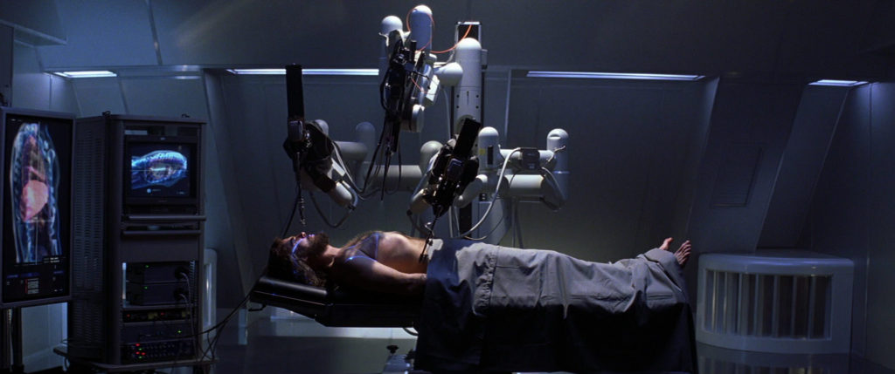
Woo Woo! So, we are just a tool.
Others, yeas “others”, monitored us. They watched us, and monitored our thoughts and actions. Then they… THEY conducted world-line slides or MWI readjustments in such a way as to assist in the development of unified human sentience. What ever that might be.
Pretty boring stuff. I will admit.
It most certainly does not sound like any kind of heroic action or heroic role.
It is nothing, nothing at all as to what I was expecting. For, in my mind, I expected to train to dog fight in state-of-the-art aircraft. I was expecting to fly and do battle over exotic lands, and meet beautiful women and have adventures beyond my wildest dreams.
Sentience Introduction
In general, the role was very simple. Once I was trained, I just assisted or facilitated the anchoring of large numbers of world-lines toward a certain convergence. We would move independent world-lines away from deviance’s that would result in discordant sentience evolution.
The key here is that our earth nursery was constructed, and is monitored, for the express purpose of establishing human sentience. We help in that.
Discordant sentience develops or occurs when actions do not match intent. It is a very important concept, and is discussed elsewhere. However, the reader should recognize it’s importance.
What you think about, and how those thoughts influence the physical reality, is in direct correlation with a person’s sentience.
What you think about, and how those thoughts influence the physical reality, is in direct correlation with a person’s sentience.
In our galaxy, discordant sentience’s are not permitted. They are considered very dangerous. There is a pretty elaborate history behind the reasoning why, but for now the reader should appreciate that a long, long time ago, when the universe was first populated, sentience’s were permitted to grow and expand. Some of the sentience’s hurt or “ate” other sentience’s. They damaged them beyond recovery.
Because of this, sentience growth is carefully monitored in our galaxy.
There are approved sentience’s and unapproved sentience’s. When a given species grows and advances, they are permitted to evolve into a set sentience. Usually, with some special prodding, the sentience is an “approved” sentience archetype. The humans (mankind) is growing within a sentience nursery of sorts. Our concern is that without proper and careful “pruning”, large groups of humans might develop discordant sentience’s.
Not only are discordant sentience’s not approved as they do not represent an a standard archetype, but they are terribly disruptive. In our case, as humans, when a given person demands someone else do something, and they benefit from it (even just in emotion), that is discordant.
Keeping things simple; if you want to help a old lady cross the street, and you do it. That is a “service to others” sentience.
If you want to get rich, without working for it, say by robbing the little old lady, that is a “service to self” sentience. I personally, do not like this sentience because it is very limiting, selfish and problematic to others. But that is just me.
If you act, behave, think and believe in agreement with another person to the extent that you have no internal censor, then you are a “service to another” sentience. You attack the little old lady simply because she does not serve the same person that you obey.
RUSH: You know why? Because you’re dealing with robots. You’re dealing with people that are not thinking. They have been propagandized. They’re incapable of thinking. It’s the whole point. They have been indoctrinated, propagandized. They can’t explain why they believe what they believe. All they can do is tell you that you’re a pig or you’re a racist or worse. -Rush on the SJW crowd
However, if you want to help the old lady cross the street, but you don’t want to do it yourself. You order another person to help that old lady. That is a “discordant sentience“. You “think” you are actually helping the old lady, but what you are really doing is using another person to accomplish what you want. Thoughts do not match actions.
In this case, the object of this help derives no benefit from your thoughts, only from the end results of your actions. Yet, this reality, and this universe is controlled by the results of our thoughts.
Therefore, it MUST make particular sense that only “pure” intent can maintain world-line stability. Confusing thoughts, or misdirected intention are disruptive to the overall stability of world-lines.
Discordant Sentience’s ===> Service to Another Sentience
Examples of this abound.
For instance, [1] demanding that Congress tax the rich instead of trying to be rich yourself. [2] Claiming to help others by setting up a charity, but funneling the money for yourself. This seems like a “service to self” action, but it really isn’t. It’s a discordant sentience. It uses others under the guise of charity (helping others), but results in personal benefit.
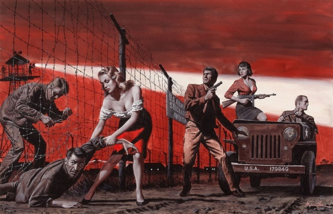
There are many kinds of sentience’s. We humans are most familiar with the common “service to self” and “service for others” sentience’s. However, there are a few other sentience’s that are developing on the earth at this time.
One is the “service to another” sentience. Not to be confused with “Service to others” sentience. I like to call this the “blind slavery” sentience. Here, a person is bound to do everything for another person, idea, or idol. Like bees who serve the queen bee.
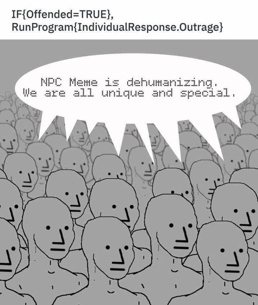
It is an ultimate goal for many “service to self” sentience’s. They want to rule over “service to another” sentience’s who will perform for them willingly without debate or hesitation. We see this and are unaware of what is going on. However, if you keep your eyes open you can see the manifestation of this. It’s pretty frightening. It really is.
"Service to another" sentience's obey and follow the commands of "Service for Self" sentience's.
Sentience Selection and Sorting
In short, and perhaps the best way to describe our tasks was as a method of assuring proper sentience development. This was, needless to say, something unexpected and completely “off the radar” as far as we were considered.
Well, I figured, if I couldn’t fly high performance aircraft, maybe I would be involved in some kind of outer space related activity. OK. Well, if I wasn’t going to be floating about in outer space, maybe I would be involved in something even more impressive; maybe something like time travel.
Cool! Right?
I never in my wildest dreams thought that I would be involved in world-line travel with the goal or corralling errant sentience’s and saving the world from discordant influences. Heck, I didn’t even know that humans had sentience’s, let alone consider them to be critically important.
Prior to entering MAJestic, I was unaware of…
- The existence of real-for-goodness extraterrestrial species.
- The idea that they have been working with Americans, and that there was an entire organization devoted to this relationship.
- That this species is many millions of years old, and were around when proto-humans were still living in trees on the shores.
- This species has a level of science that is many millions of years old, and involves souls, Heaven, and thoughts.
- That this species can transport a person anywhere in the physical universe.
- That this species can alter our physical reality by conducting world-line changes.
- That there were galactic sentience archetypes.
- That “pruning” of non-approved sentience’s was necessary for the stability of the physical universe.
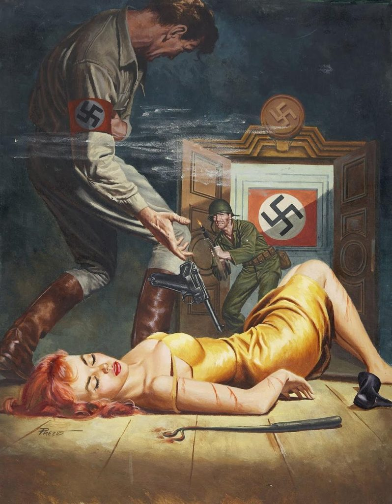
That of course was the great rub.
What I expected was nothing like what I participated in. And, as the reader might be well on the way to realizing that their own opinions and thoughts about what I did, and what MAJestic does could very well be quite wrong and incorrect.
I was hoping that I could play the hero role and save a beautiful girl (or two). I was hoping that I could fly at dizzying speeds in state of the art, multi-million dollar rockets and aircraft. I was hoping that I could one day meet other non-earth creatures, have a talk with them, and get to understand them.
Well, my hope and dreams had no reflection on the reality that I experienced, though it did have an influence in how I interacted with the situations that came my way. And, oh yes, these situations did come my way. The “others” fully intended them to come my way, and for me to experience them. They wanted to see what I thought and reacted to the events.

These situations were all adventures. They were, that is undeniable.
For I actually did meet extraterrestrials, and I did have conversations (of a sort) with them. I actually did leave the earth’s atmosphere, and I was actually involved in very advanced technology. Yes, everything that I was involved in was very secret and absolutely important…
Yet. Yet…
It wasn’t anything like I expected.
That is the point that I would like to make here. While we humans place a great deal of emphasis on working, making money, and fame with fortune, the truth is that those goals are trivial.
Yes they are.
They are no more important than a dog going outside and peeing on every bush, tree, and pole once they get out the door. It is no more important than a bird presenting itself for the best mating advantage. It is nothing more than a fish swimming up steam to spawn.
Humans are just animals with a brain that can conjure ideas, and hands that can create tools.
We have created a world and a reality where we personally believe that we are the dominant species on this planet. This has been taken to extremes by the ignorant among us, and extended to the solar system, the galaxy and even the universe. We reinforce that belief continuously and insist that we are correct in our ignorance.
And everything that we do that revolves around these trivial goals, are themselves trivial. Whether to “manage” a nation, command a large army, become famous in a new movie or music video, or to collect top secret documents and sell them to the highest bidder (Hillary Clinton style), they are all trivial pursuits.
I can go on and on with examples.
Trivial goals include Ellen DeGeneres pandering a television show to women of similar thoughts and ideas. Trivial goals include Jack Nicholson in sleeping with the largest number of women possible, or that young dude at the bar last week who thought that he could drink me under the table with V.S.O.P. (It didn’t happen. LOL. I have built up a kind of immunity to the stuff.)
The real important elements of our lives revolve in our behaviors towards others. These actions, and NOT the thoughts alone, determine our sentience. And, dear reader, it is our sentience that is what is important to us during this period of growth and evolution.
Thoughts + Actions = Sentience
As far as I know, there is NOT ONE SINGLE BOOK or article that describes the idea or concept that sentience is important. No one, not one person, recognizes that sentience has different forms and shapes and manifests in different ways. Not one person has ever written that sentience evolves over time, yet we know it must be true. Surely, evolutionary theory predicts that the sentience of proto-humans must have been supremely different from that of modern man.
Certainly all these points should be obvious and crystal clear.
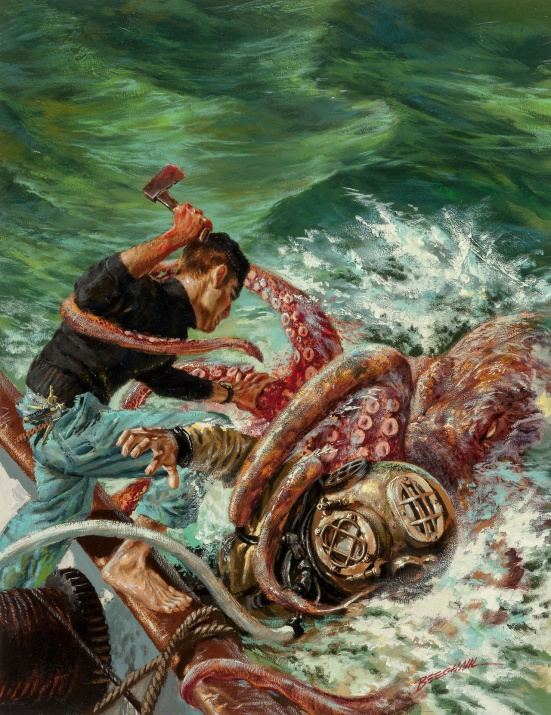
For some species, sentience varies depending on the sex of the member in a given species.
(Note, that most species, but not all, have two sexes. Dogs can be male or female as are cats, horse, cows, crow, eagles, and whales. Other creatures, often non-mammal, such as worms, spiders, and various forms of bacteria have more interesting ways of creating offspring and procreating.)
These elements are encoded in the biological genetic makeup of a person and vary upon conditions that trigger sentience development. OF course that is a very complicated subject and is far too advanced (not only not germane to this discussion) for us to dwell too deeply in it at this time. For now, let’s just consider sentience maintenance and guidance to be a major role of MAJestic at this time.
So, with that in mind, the reader should be well equipped to understand that their expectations as to what that I can present to them in regard to MAJestic might be a little bit of a disappointment.
The present day incarnation of what MAJestic is, is well removed from what it was first established as. As a result those of us who actually participate in the organization are involved in tasks that are far, far removed from what we individually expected to materialize.
MAJestic Operations
While I just cannot speak for the entire organization, and my experiences are related to a very small sub-program within the larger scheme of things, I can make some broad sweeping statements about what MAJestic is today.
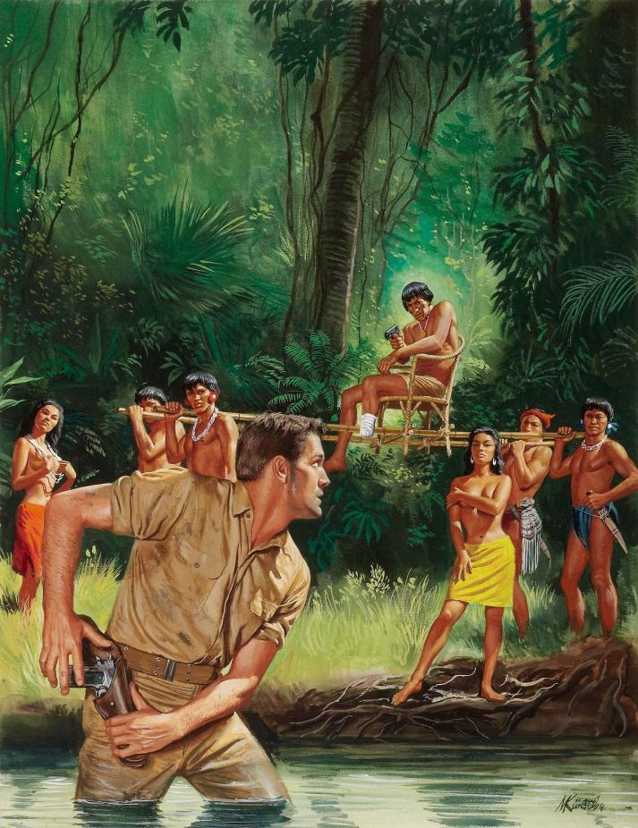
MAJestic is an organization, staffed by Americans, that assist the <redacted> in policing this sentience nursery. They perhaps prefer one type of sentience over another, but in reality, their function is to assist in the development of but ONE and ONE only sentience for the human species. (We can have multiple sentience’s, but that requires multiple physical states. Like Homo Sapiens, and Homo Erectus.) They work in conjunction with the multi-dimensional <redacted> to accomplish this task.
MAJestic is buried deep, deep down inside the United States government.
MAJestic is the ONLY organization in the United States that deals with extraterrestrials in any way.
MAJestic has numerous projects that are going on simultaneously at any given moment. While there are projects related to reverse engineering technology, species communications, and other subjects of a rather diverse nature, the bulk of contemporaneous activity is in support of nursery management.
I do not know, personally, of all the various projects. I can ONLY speak in confidence regarding my own very unique project. Other posts will cover that subject in greater detail.
My project was, as I need to repeat, was involved in “dimensional anchoring for world-line convergence”. It involved, as it’s core tool, dimensional world-line travel and switching. As such, I was an “operator”, known as a “commander” where I worked in conjunction with an extraterrestrial “pilot”. We were connected though a biological artifice.
I operated in this role for thirty years more or less. The measurables for this project were as determined by our extraterrestrial leadership. In no way was my actions, the success or failure, were determined by human MAJestic leadership.
MAJestic was the framework which gave me, or better yet “sold” me, to the <redacted> for them to use me as they determined. In exchange, MAJestic obtained technology that others within MAJestic could reverse engineer. So, in my case, I was not a “hero”, though I worked hard, studied hard, and tried, really hard to become one.
So, it makes me question whether or not my previous ideas and concepts of what a hero is was correct…
As stated previously, one of the great frustrations of my role, was the inability to identify an enemy or prejudicial source of conflict.
The source or cause for the need to conduct “dimensional anchoring” is your typical human. However, it is the actual wealthiest “service to self” individuals that are the bulk drivers for the need to conduct these operations. These people do not understand that thoughts influence our reality is various ways. They only think in terms of physical action. They think in terms of money. They think in terms of manipulation of large masses of people.
They do not understand that this is not a pure influence. They are creating a “service for self” humanity that is grouped into two set kinds of sentience’s. One, the ruling class; consisting of “service for self” individuals and the “rabble”, the vast bulk of society that consists of “service for another” that serve them.
If they ARE aware of this situation, they want it to proceed to it’s conclusion.
I don’t like it. However, the <redacted> does not see this as a problem. They view it as a natural progression of species development.
Not everyone is involved in promoting the kinds of behaviors that create the need for dimensional stability. Therefore it is difficult for me to locate a culprit. They remain protected, secretive, and illusive.
Remember, the goal is to determine the ultimate sentience for the human species.
I was always under the impression that it was destined to be a “service to others” sentience. However, it looks like it could possibly migrate to a separation of the human species into two distinctly different species. One, the “superior” or ruling species as “Service for self”, and the subservient or farmed species, the “service for another”.
Here is the NPC meme that aptly describes the “Service for another” sentience…
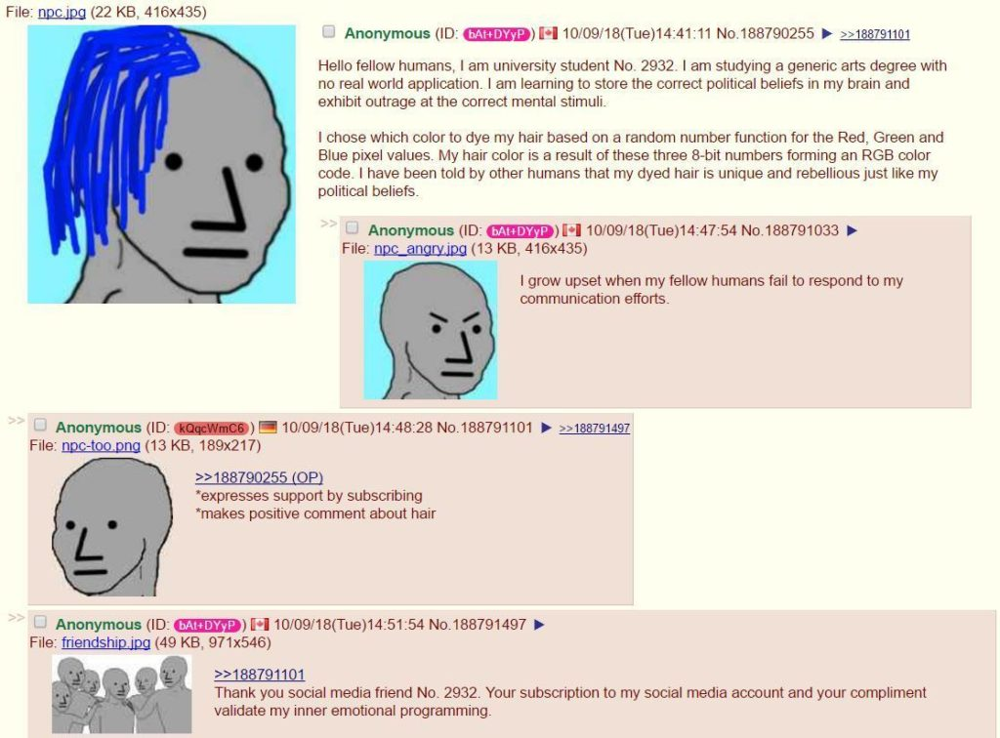
Each of the two human species would have the RNA recoded to fit a galactic approved sentience. One for the rulers, and one for the servants.
Later on in another post I list only a mere handful of some of the people, or kinds of people that have been involved in the tearing of the fabric of our reality. However, for now, let’s just keep it simple in that it is the very nature of the human condition that has created the need for my role.
The Possibility of Genetic Stratification
If humans decide, and it will be us as a whole that makes the decision, to settle into “Service for self” with “Service for another” sentience loyalties, then we can expect the <redacted> to reconfigure our genetic makeup to fit into approved archetypes.
This means that those humans who have the “Service for self” sentience would have one set of DNA / RNA. Those who would be “Service for another” would have a different set of DNA / RNA.
Those who would not fit into these two set sentience’s, would be allowed to die off. That would include all “discordant sentience’s”, and “Service for others” sentience’s. We would be allowed to die off. Which would be accomplished though action by those with approved sentience’s, and by other means such as a increase in infertility of non-approved sentience’s. It would be a culling effort.
The result would be a stratification of society. With different caste systems defined by genetic makeup.
You would have the very successful, and (of course) wealthy “Service for self” sentience’s…
Served by the the vast bulk of humanity, now “Service for Another” sentience. Those humans would represent the majority of humanity. They would consist of 95% of all humans, serving a small minority of 5%.
Initially, the two sentience’s would look alike. However, within a generation or two, physical changes would manifest. One caste would be heavier, smaller, squatter and would have a lower IQ. While the other would be healthier, live longer, be smarter and more agile.
There would be no desire to mix or have relations outside of your caste.
The Role of a Hero
While we might be confused with everything going on in the world today, the fact is that it is all trivial in terms of the bigger picture. Humans are in an arena that will determine what sentience will dominate.
The <redacted> does not care one way or the other.
While there is evident that another species, the <redacted> prefer the stratification of sentience’s, it is unclear what will eventually manifest.
Personally, since all MAJestic members are “Service for others” sentience, I tend to believe that this would be the preferred direction that human evolution must advance forward. However, that is my opinions only.
Why you, the reader, can be a hero
Our reality is the results of our thoughts, coupled with our actions.
As long as there are significant members of our society to act selfishly with impunity (service for self), and there are those that follow them blindly (service for another) the human species will continue to careen towards human social stratification.
The only way to combat this is to be heroic.
We must start thinking of doing good deeds for others (service to others). We must do so on a small scale. We must do so on an individual scale. We must start doing so now, and today.
Task List
The oligarchy is quite active in manifesting physical change for personal profit. They control the media, and in many ways, the governments. They think that they are only altering the physical reality towards their favor. Instead, what they are actually doing is creating all kinds of errant thoughts. Many of which result in discordant changes and alterations to reality.
This is what you can do.
- Severely restrict your access to media.
- Completely stop reading and listening to ALL forms of “establishment” news.
- Enjoy life. Spend more time outside.
- When you meet people; others, be kind to them.
- Smile more.
- If someone needs help, or if some animal needs help, help them. Don’t just drive by and ignore them.
For us to ultimately define our futures, we must all begin to control our thoughts and our actions.
A Hero’s Tale
Friday morning, Chuck Hawley from Silverton, Oregon was on his way to work when he spotted something in the middle of the road. As he got closer, he realized that it was a kitten stuck in the lane.
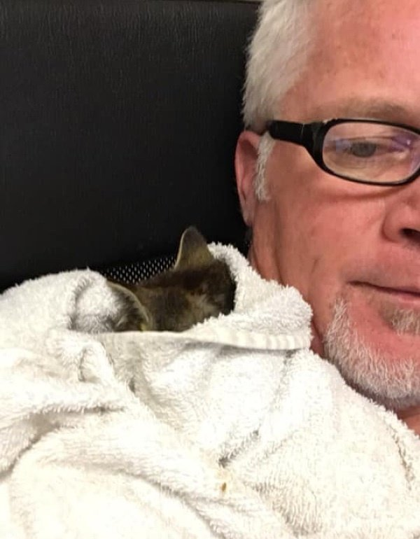
“I was driving to work and saw cars in front of me passing over something in the road, and realized it was a kitten sitting upright shaking like a leaf,”
The tiny feline appeared to be stuck to the ground and couldn’t break free. Many cars drove around her, but no one stopped. Chuck knew that he had to do something quickly before it was too late. He put his hazard lights on, carefully stopped traffic and rushed to grab the kitten. That’s when he noticed that the kitty was covered in glue. That’s right. Some asshole dipped the kitten in glue and plopped it down in the middle of a busy highway.
“She was wet, freezing and literally glued to the road,”
Chuck gently removed the kitten off the pavement. Her paws were very tender and she was shivering from the cold. He put her in his arms to warm her and swiftly brought her back to his car.
After a much-needed bath and some food, the kitten felt much better. “We don’t know who put her there or how long she was there, but she was wet and cold and had leaves stuck to her,“
He took the kitten to the Silver Creek Animal Clinic, where they removed the rest of the glue and treated her paws with mineral oil. After a long ordeal, the tabby girl was on the mend. She clutched onto her rescuer and purred up a storm. On their way home, the 5-week-old kitten curled up in his lap and went right to sleep.
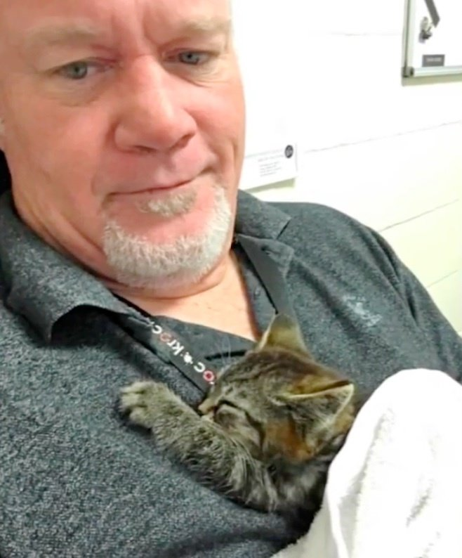
You don’t need to wear riding britches, wear a pith helmet and holster a revolver to be a hero. You just need to take action when someone or something is in need. Help others.
Finally…
I saw a video about ten days ago on fb, about five minutes long. Camera was still and directed at some kind of small critter cowered down in middle of the right lane. Traffic was moving toward (not away from) the camera. Cars passed around the critter - none of the vehicles passed over the critter. Then, a car stopped right at the critter. A man got out, went to the critter and talked to it! He then picked it up and put the thing in his car!....and drove off. I now wonder if this story is the first part of the story. -posted on 10/21/2018, 9:16:04 PM by Karoo
Comments
Heroes are what we need right now. The stakes are pretty darn high. We either evolve as a species toward selfless behavior, or we evolve towards selfish behavior and the equivalent social genetic stratification.
A hero goes out and does what is necessary. He does it right then and there. He doesn’t walk past ignoring the problems, get gets out and faces them.
So, my point herein is this; are you the hero that the world needs?
John McClane: Do you know what you get for being a hero? Nothin'. You get shot at. Pat on the back, blah blah blah. 'Attaboy.' You get divorced... Your wife can't remember your last name, kids don't want to talk to you... You get to eat a lot of meals by yourself. Trust me kid, nobody wants to be that guy. (I do this) because there is nobody else to do it right now. Believe me if there was somebody else to do it, I would let them do it. There's not, so (I'm) doing it. That's what makes you that guy."
Be that guy.
Take Aways
- Our human species is undergoing an evolutionary cycle.
- This cycle will eventually determine what our dominant sentience will be.
- Once determined, another species, the <redacted> along with support from <redacted> will assist in large scale genetic reprogramming of our species during the conception process.
- There is a chance that the genetic reprogramming could result in a stratified human caste system.
- If there was ever a time for heroes to get active in the world, now is that time.
MAJestic Related Posts – Training
These are posts and articles that revolve around how I was recruited for MAJestic and my training. Also discussed is the nature of secret programs. I really do not know why the organization was kept so secret. It really wasn’t because of any kind of military concern, and the technologies were way too involved for any kind of information transfer. The only conclusion that I can come to is that we were obligated to maintain secrecy at the behalf of our extraterrestrial benefactors.


MAJestic Related Posts – Our Universe
These particular posts are concerned about the universe that we are all part of. Being entangled as I was, and involved in the crazy things that I was, I was given some insight. This insight wasn’t anything super special. Rather it offered me perception along with advantage. Here, I try to impart some of that knowledge through discussion.
Enjoy.


MAJestic Related Posts – World-Line Travel
These posts are related to “reality slides”. Other more common terms are “world-line travel”, or the MWI. What people fail to grasp is that when a person has the ability to slide into a different reality (pass into a different world-line), they are able to “touch” Heaven to some extent. Here are posts that cover this topic.


John Titor Related Posts
Another person, collectively known by the identity of “John Titor” claimed to utilize world-line (MWI egress) travel to collect artifacts from the past. He is an interesting subject to discuss. Here we have multiple posts in this regard.
They are;